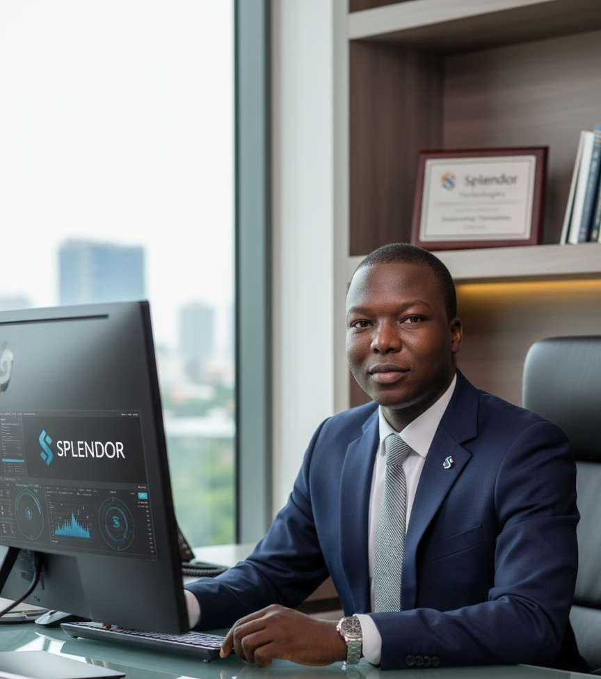

CHRISTAIN FUTURE BILLIONARIE

Ifeanyi Okorie Kinglsey
KOSIC: God's Own Prince
2005-2025
KOSIC know as “Kingsley Okorie Ifeanyichukwu” born on June 27th, 2005. God’s Own Prince.
He known as the “GUC” because of his voice and passion from music, he is very talented, both in song and song writing. He one of the youngest Christian Future Billionaires’, he role as a graphic design and print press.
He hardworking and talented young man who is making great progress in life. He is deeply involved in agriculture, always learning new methods and putting in the effort to grow crops and improve farming practices. His passion for the land shows in everything he does.
He is also skilled in graphics design. With creativity and patience, he designs beautiful and professional works that stand out. Whether it is a logo, flyer, or digital artwork, he always delivers something excellent.
Above all, he is a God-fearing brother in the Lord. He loves God, respects people, and carries himself with humility. His character, integrity, and faith make him a blessing to everyone around him. He is truly a friend worth having—dedicated, talented, and guided by the fear of God.
Kingsley Okorie Ifeanyichukwu is a dedicated and purpose-driven young professional whose life reflects hard work, creativity, and a strong foundation in faith. Born with a passion for growth and positive impact, he has developed himself in multiple fields, most notably agriculture and graphics design, while remaining grounded as a God-fearing brother in the Lord.
From an early age, he showed interest in agriculture, inspired by the importance of food production and the desire to contribute to his community. Over the years, he has gained hands-on experience in farming, crop management, and modern agricultural practices. His commitment to learning and improving makes him a promising figure in the agricultural sector. He believes that agriculture is not just a business, but a calling to provide for others and support the development of society.
In addition to his agricultural pursuits, he is a talented graphics designer. His creativity, attention to detail, and passion for visual communication set him apart. He has worked on various design projects—logos, flyers, posters, branding materials, and digital artwork—earning respect for his professionalism and originality. For him, graphics design is both an art and a way to communicate powerful messages that inspire people.
Beyond his skills and achievements, what truly defines him is his deep love for God. He is a committed Christian who strives to live by biblical principles. His humility, kindness, and integrity reflect his strong spiritual foundation. He encourages others through his words and actions, making him not only a friend but a brother in the Lord.
With a blend of talent, discipline, and faith, Kingsley Okorie Ifeanyichukwu continues to grow and make a positive impact in everything he does. His life is a testament to dedication, creativity, and the grace of God at work.

Okorowu Enyinnaya Nehemiah
SPLENDOR TECHNOLOGIES: Manners maketh a man
2005-2025
SPLENDOR now as “Okorowu Eyinnaya”, born on March 25th, 2005. Manners maketh a man. He is funny full of laughter, the boy of vision, who have clear vision in the Lord. Another Christian Future Billionaires’ who is inspired in some many design in both in tech and also 3D animation.
Okorowu Enyinnaya Nehemiah is a talented and visionary young professional whose life combines creativity, technology, and faith. He has developed himself in multiple fields, including UI/UX design, 3D animation, graphics design, while remaining a God-fearing brother in the Lord.
From an early age, he displayed a passion for technology and digital creativity. His expertise in UI/UX design allows him to create intuitive, user-friendly interfaces that enhance digital experiences and meet modern design standards. Alongside this, his skills in 3D animation enable him to bring ideas to life in dynamic, visually engaging ways, captivating audiences with realism and imagination. He is also a gifted graphics designer, combining creativity and precision to produce professional logos, digital artwork, and branding materials. His work is a reflection of his dedication, attention to detail, and desire to communicate ideas effectively through visual design.
Above all, his life is guided by faith. As a God-fearing brother in the Lord, he demonstrates humility, integrity, and kindness in everything he does. His character inspires those around him, showing that talent and success are best balanced with spiritual grounding and moral values. With a unique blend of technical skills, creativity, and faith, Okorowu Enyinnaya Nehemiah continues to grow and make a meaningful impact in the digital world while living a life that honors God.

Emeka Okorie F
E-MONEY
2003-2025
Emeka Okorie Fborn on May 19th, 2003. is one the Christian Future Billionaires’ who passion about the future of the youth.Emeka Okorie F is a dedicated and God-fearing young man whose life reflects hard work, discipline, and a deep commitment to his Christian faith. He is known for his humble spirit, strong moral values, and his desire to live a life that honors God in everything he does.
Professionally, he is deeply involved in the automobile and motorcycle industry, where he has built a reputation for skill, reliability, and excellent customer service. Whether it is repairing vehicles, maintaining motorcycles, or offering expert advice, he is trusted for his honesty and quality workmanship. In addition to his work with automobiles, he is also engaged in the transportation business, providing safe, dependable, and efficient transport services in his community. His passion for mobility, mechanics, and serving people has made him a valuable part of the transportation sector. Beyond his work, he is a supportive friend, a responsible leader, and a brother who carries the fear of God in his heart. His lifestyle encourages others to pursue integrity, diligence, and excellence. He continues to grow in his profession while holding firmly to his faith, making him an inspiration to many around him.
Emeka Okorie Francis is a devoted and God-fearing young man whose life reflects humility, integrity, and strong Christian values. He is well-known for his calm spirit, genuine kindness, and his unwavering commitment to serving God in every area of his life. Professionally, Emeka is skilled in the automobile and motorcycle industry, where he has developed a strong reputation for his technical expertise and honesty. Whether it involves repairing cars, servicing motorcycles, or offering professional mechanical advice, he delivers his work with excellence and reliability. His dedication to quality service has earned him the trust of many within and outside his community.
Emeka is also actively involved in the transportation business, providing safe, timely, and dependable transport services. His passion for mobility and his desire to help people move efficiently make him a valuable and respected figure in this sector. Beyond his work, Emeka is a supportive friend and a responsible brother in the Lord. His God-fearing nature shines through his actions, conversations, and lifestyle. He inspires others with his disciplined character and his commitment to living a life that brings glory to God. Emeka Okorie Francis continues to grow in his profession and faith, making positive impacts wherever he goes and serving as a role model to those around him.
_1763666180824.jpg)
Ifenaboh Chidiebere
SOLO
2003-2025
Ifenaboh Chidiebere born on April 10th, 2003, he is know as Solo because is wiseness and his passion for souls for the Lord.
Ifenaboh Chidiebere is a God-fearing and dedicated young man whose life reflects integrity, humility, and unwavering faith in God. Known for his calm spirit and strong moral foundation, he stands out as someone who strives to honor God in all his actions. Professionally, Chidiebere is deeply involved in the media industry, where he uses his creativity and communication skills to produce inspiring, informative, and high-quality content. Whether in digital media, content creation, production, or media coordination, he is recognized for his commitment to excellence, originality, and professionalism. His passion for media allows him to positively influence and connect with people across different platforms.
In addition to his media work, Chidiebere is also a focused and forward-thinking businessman. He manages his business ventures with wisdom, strategy, and determination. He is hardworking, goal-driven, and always seeking opportunities to grow, innovate, and make meaningful contributions to his community. Beyond his career, Ifenaboh Chidiebere is a supportive friend, a role model, and a brother whose God-fearing nature shines through his lifestyle and decisions.
_1763666207295.jpg)
SOLO Whether it is content creation, media production, digital storytelling, or managing media projects, he approaches every task with dedication and a professional mindset. His work in media has earned him respect for quality, consistency, and originality. Alongside his media journey, he is also a determined businessman. He manages his ventures with wisdom, strategic thinking, and a strong entrepreneurial spirit. His business activities reflect his drive to create opportunities, support others, and build something meaningful for the future. He is focused, hardworking, and committed to growth.
_1763666359470.jpg)
Chukwudi Divine- favour
DIVINO
2009-2025
Chukwudi Divine- favour born on July 5th, 2009, is the youngest and smallest young Christain Future Billionaires’ with is smartness on skill learning and insipred by his work of seriousness and hardworking.
Chukwudi Divine- favour is a God-fearing, disciplined, and intelligent young man whose life reflects strong Christian values, dedication, and a passion for technology. He is known for his calm spirit, integrity, and his commitment to living a life that honors God in everything he does. Professionally, he is deeply involved in ethical hacking and cybersecurity, where he uses his skills to protect systems, networks, and digital platforms from threats. With a sharp mind and a deep understanding of computer systems, he works to identify vulnerabilities, strengthen security, and ensure safe digital environments for businesses, organizations, and individuals. His expertise includes cybersecurity analysis, ethical hacking, penetration testing, and network defense. He is recognized for his problem-solving abilities, attention to detail, and his strong commitment to using his knowledge responsibly and ethically.
Through continuous learning and practical experience, he has become a trusted figure in the cybersecurity field. Beyond his professional life,Chukwudi Divine- favour is a humble and supportive friend, always ready to help others grow spiritually and mentally. His God-fearing nature guides his actions, decisions, and interactions. He believes in using technology for good, protecting people, and contributing positively to the digital world.
_1763666233234.jpg)
His expertise spans ethical hacking, penetration testing, network security, data protection, and cybersecurity analysis. Divino is respected for his professionalism, his dedication to learning, and his commitment to using his technical abilities responsibly and ethically. He believes in the power of technology to make the world safer and better. Spiritually, Divino is a committed Christian who puts God first in everything he does. His God-fearing nature guides his decisions, shapes his character, and inspires those around him. He is a loyal friend, a kind encourager, and someone who leads by example. Through his strong faith, passion for cybersecurity, and dedication to excellence, Divino continues to make a positive impact in both the digital world and the lives of those who know him.
Samuel Precious Chimezie
WHITE MONEY
2001-2025
Samuel Precious born on September 26th 2001, know as White Money he is social with kids, and passion in the things of computer espcially in tech, as the tech guy
Samuel Precious is a young, passionate, and visionary individual whose life is defined by two strong pillars: his deep love for technology and his unwavering fear of God. From an early age, he developed a natural curiosity for how things work, especially in the digital world. While many saw gadgets as tools, he saw them as opportunities—opportunities to create, improve, and solve problems that matter.
Growing up in a faith-driven environment, he learned the importance of humility, integrity, and spiritual grounding. These values shaped not only his character but also the way he approaches his work. To him, technology is not just a career path; it is a calling—a chance to build solutions that make life easier while honoring God with excellence, honesty, and purpose.
Over the years, he has grown into a skilled tech enthusiast with strong abilities in web development, digital systems, and innovative problem-solving. Whether he is writing code, building a digital platform, exploring cybersecurity, or learning new tools, he always seeks to understand the “why” behind every process. His commitment to self-development keeps him updated with emerging technologies, and he continuously pushes himself to improve and innovate.
Despite being deeply involved in the fast-paced world of technology, his relationship with God remains the center of his life. He believes that wisdom comes from God, and that true success is rooted in righteousness, discipline, and the pursuit of purpose. He strives to live out his faith not just in words but also in his actions—by being honest, dependable, respectful, and dedicated in everything he does.
Friends and colleagues often describe him as focused, hardworking, calm-spirited, and spiritually grounded. He is someone who blends technical intelligence with moral strength, making him a rare combination of modern innovation and godly character. He carries himself with humility while still aiming for greatness, believing that whatever talent God gives must be used to uplift others.Looking ahead, Samuel Precious dreams of building impactful tech solutions, empowering young people, and creating systems that transform communities. But above all, he desires to remain faithful to God, using his gifts in a way that reflects light, integrity, and leadership.
Samuel Precious is a talented and visionary individual whose life is shaped by his profound faith in God and his deep passion for software engineering. From an early age, he was fascinated by computers, coding, and the endless possibilities technology could offer. While many saw technology as a tool, he saw it as a calling—a way to innovate, solve real-world problems, and make meaningful contributions while honoring God.,
Growing up in a faith-filled environment, he developed a strong moral compass, guided by principles of integrity, humility, and purpose. These values are central not only to his personal life but also to his professional approach. To him, software engineering is more than just writing code—it is an opportunity to create solutions that can transform lives, improve communities, and leave a lasting impact.
Over the years, he has become a skilled software engineer with expertise in areas such as web and mobile application development, backend and frontend systems, and software architecture. His commitment to excellence drives him to stay updated with emerging technologies, frameworks, and best practices, ensuring that every project he undertakes is executed with precision and innovation. He thrives on challenges, viewing them as opportunities to learn, grow, and push the boundaries of what technology can achieve.
Despite his deep immersion in the fast-paced world of software engineering, his faith remains at the center of his life. He believes that true wisdom and success come from God, and that every gift and talent must be used responsibly and ethically. His faith guides his decisions, interactions, and leadership, making him not only a skilled engineer but also a person of character and vision.
Friends and colleagues often describe him as diligent, insightful, and spiritually grounded—a rare blend of technical brilliance and moral integrity. He approaches his work with both creativity and discipline, striving to produce software solutions that are both efficient and impactful, all while maintaining his godly principles.
Looking forward, Samuel Precious aspires to create innovative software platforms, mentor aspiring engineers, and build technologies that drive social progress. Above all, he aims to glorify God through his work, using his talents to uplift others, solve meaningful problems, and inspire a new generation of tech professionals who value faith as much as skill.
His journey in software engineering is ongoing—anchored in faith, fueled by curiosity, and driven by a desire to make a difference in the world, one line of code at a time.
His journey continues—guided by faith, driven by passion, and anchored in a desire to glorify God through technology and excellence.